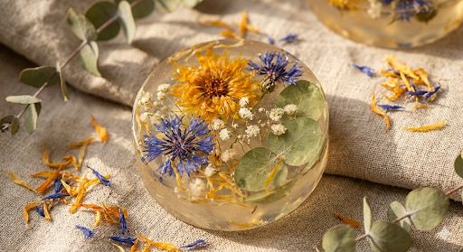
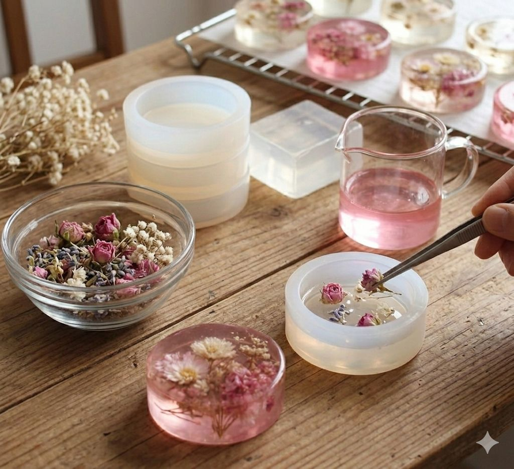
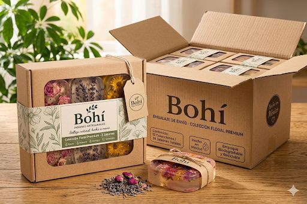

Bohí ofrece jabones artesanales elaborados con ingredientes naturales y procesos amigables con el medio ambiente. Cada jabón está diseñado para brindar limpieza, hidratación y bienestar, incorporando flores naturales, aromas suaves y una presentación artesanal que los diferencia de los productos industriales. Peso aproximado de 100 g por pieza.

Los jabones Bohí están elaborados con materias primas de origen natural cuidadosamente seleccionadas para garantizar calidad y cuidado de la piel. La selección busca reducir el uso de sustancias agresivas y promover alternativas más sostenibles para el cuidado personal.

El proceso de elaboración de Bohí es completamente artesanal, lo que permite conservar la calidad del producto y ofrecer piezas únicas con acabados artesanales.

Bohí utiliza empaques ecológicos diseñados para proteger el producto y reducir el impacto ambiental. Para exportación se utilizan cajas reforzadas y materiales de protección que garantizan la conservación del producto durante el traslado.
Bohí – Jabones Artesanales Naturales
Hidalgo, México
Lunes a Viernes
9:00 – 18:00 h